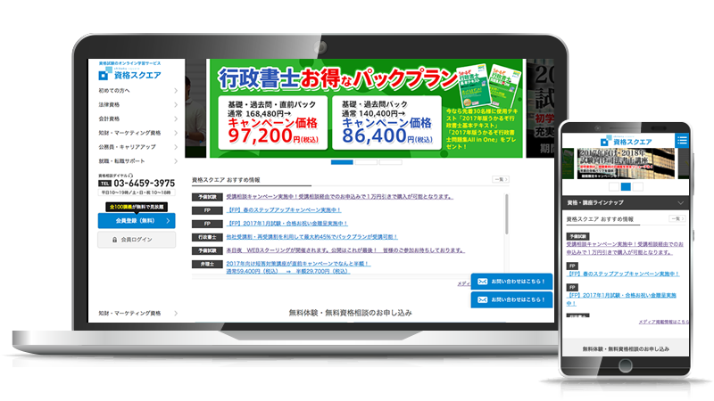

オンライン学習サービス リニューアル

資格試験対策を行うオンライン学習サービス「資格スクエア」のリニューアルを行いました。
https://www.shikaku-square.com/
期間：2016/8 ~ 2016/12
目的
無料会員登録の強化。
レスポンシブ化。
スマートフォンサイト刷新。
チーム人数
ディレクター / デザイナー / コーダー：1人
エンジニア：3人
マネージャー：1人
担当
企画 / サイト設計 / デザイン / HTML・CSSコーディング / JavaScriptプログラミング / 進行管理
デザインコンセプト
パソコンとスマートフォン・タブレットでデザインテイストが違う為、
統一化されたデザインを提案し、サービスの品質向上・競合他社にはない独自性を考え設計。
クリアなデザインで信頼性の高いものを目指しました。
また、強みである脳科学ラーニングをアピールするコンテンツが無かった為、新規提案し制作。
無料会員獲得を強化する為の新ページも提案し制作しました。